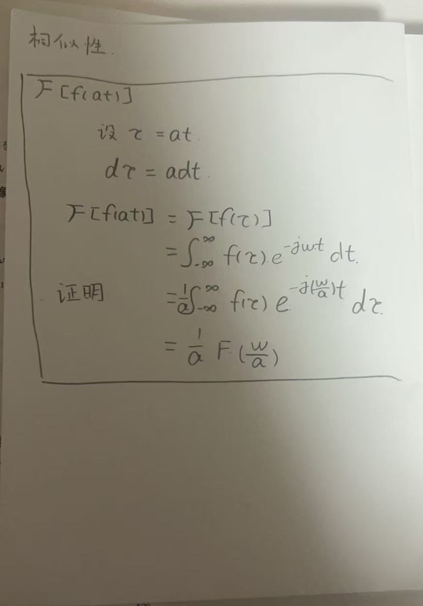
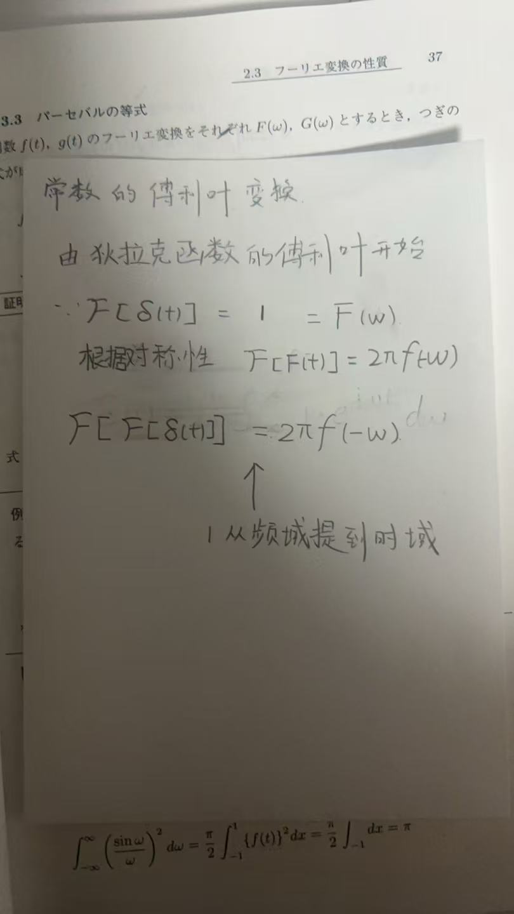
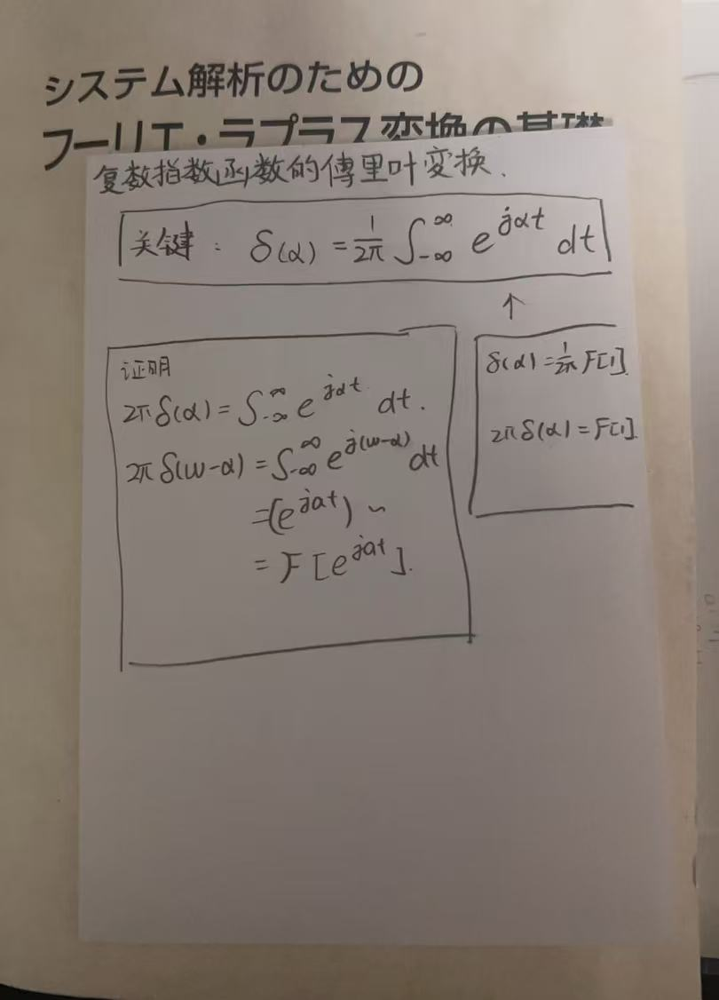
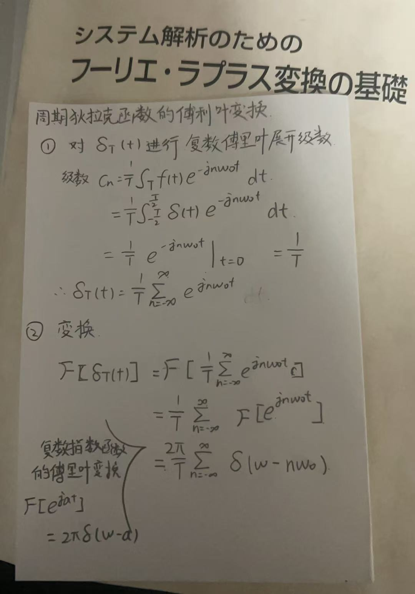
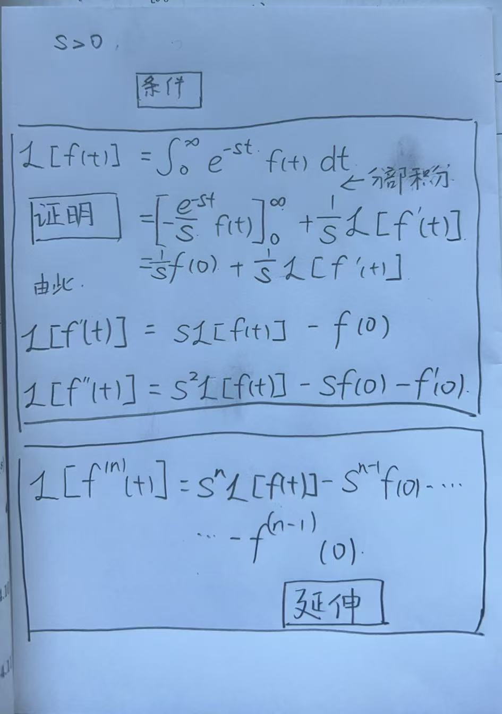
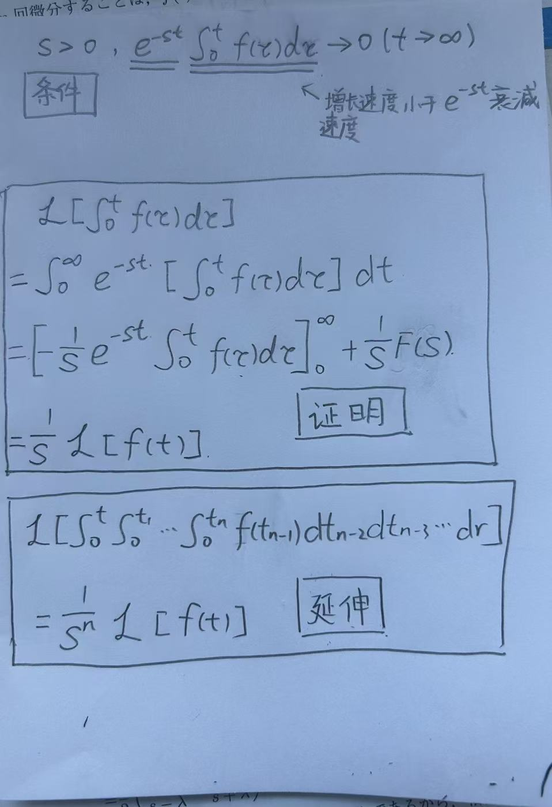
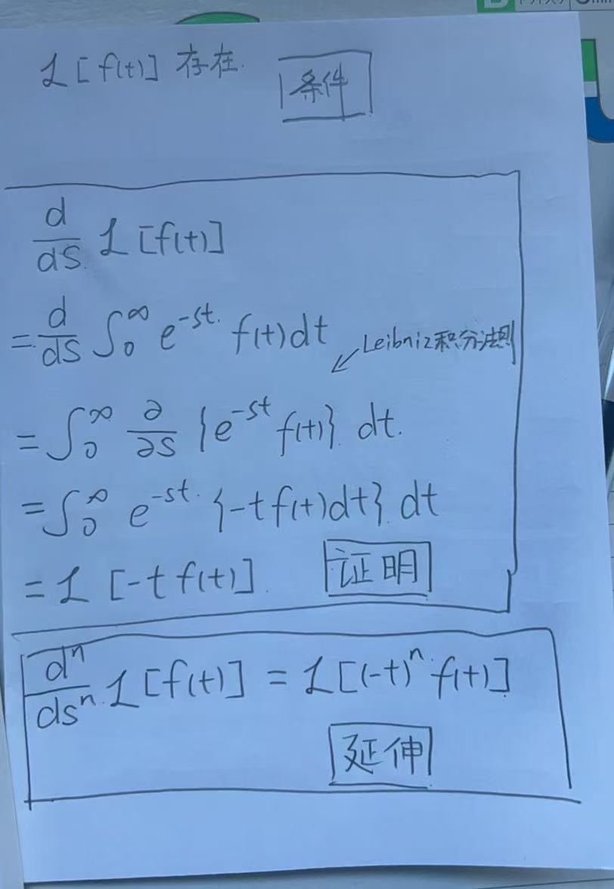
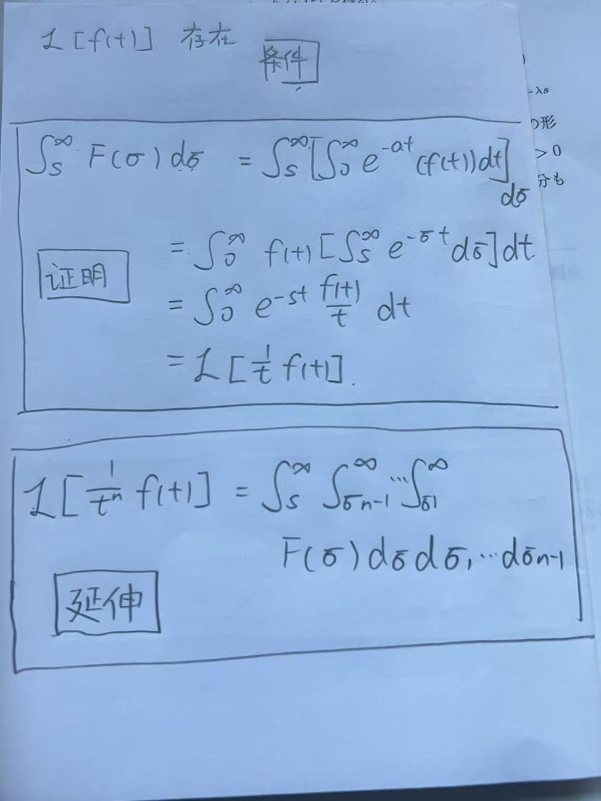
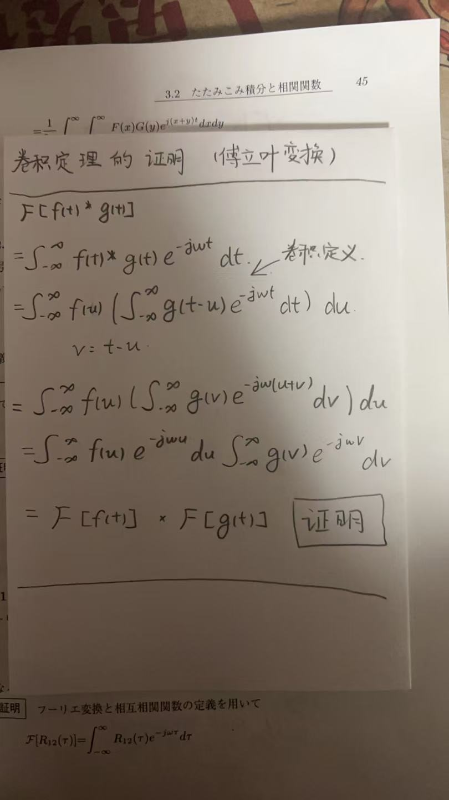
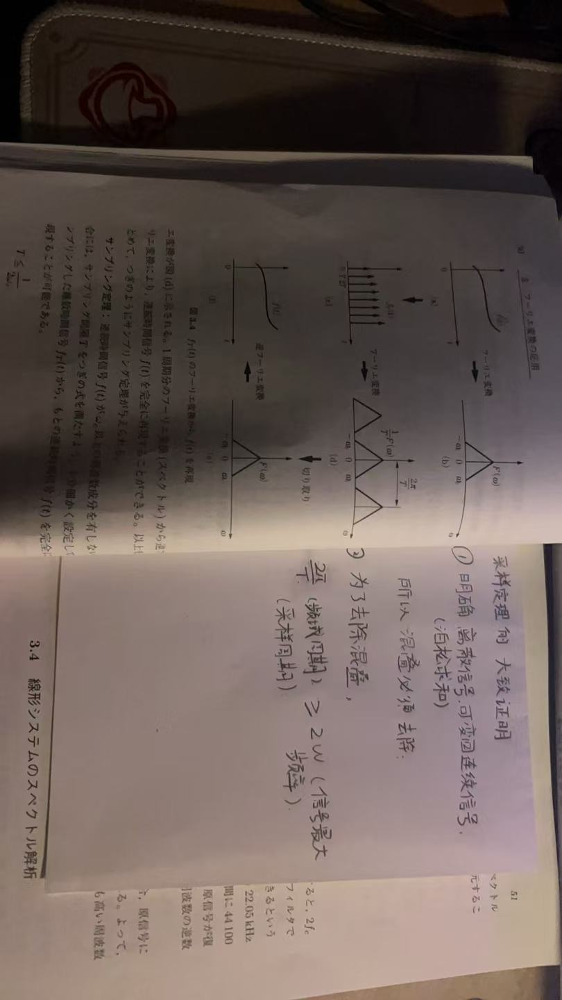

Interesting place(after reading)
1.The 1/2π Factor between FT and IFT
Here, we focus on $\frac{1}{2\pi}$.Why is there a $\frac{1}{2\pi}$ in Synthesis Equation of Fourier transform?And how can we summarize this pattern?
$$ f(t) = \mathcal{F}^{-1}[F(\omega) ]= \frac{1}{2\pi} \int_{-\infty}^{\infty} F(\omega) e^{j\omega t}d\omega$$
The process of obtaining the answer:
1. First,I consulted AI(gemini)
Actually,the reason why Analysis Equation and Synthesis Equation are asymmetric is that we use $\omega$ to define the transform.If we use $f$ to define these two transform.they would look like this:
$$ \mathcal{F}[f(t)]=\int_{-\infty}^{\infty} f(t) e^{-j2\pi f t} \ dt $$ $$ f(t)=\int_{-\infty}^{\infty} \mathcal{F}[f(t)] e^{j2\pi f t} \ df $$
Because $\omega=2\pi f$, we can get $d\omega=2\pi df$, By substituting this.
$$\int_{-\infty}^{\infty} \mathcal{F}[f(t)] e^{j2\pi f t} \ df =\frac{1}{2\pi}\int_{-\infty}^{\infty} \mathcal{F}[f(t)] e^{j\omega t} \ d\omega $$
2.Second,found something interesting
$\frac{1}{2\pi}$ in Synthesis Equation is similar to $\frac{1}{T}$ in Fourier series.
$$c_n = \frac{1}{T} \int_{T} f(t) e^{-jn\omega_0 t} \ dt$$
$$f(t) = \frac{1}{2\pi} \int_{-\infty}^{\infty} F(\omega) e^{j\omega t} \ d\omega$$
Intuition: The process here involves normalization.
- In Fourier Series, $c_n$ is calculated by dividing by the period $T$ to find the average value.
- In the Inverse Fourier Transform, the term $\frac{1}{2\pi}$ acts as a normalization factor because the integration is over $d\omega$ (circumference), whereas the true amplitude corresponds to the radius concept.
more–>DFT_and_FFT(Dive_Into_Fourier_Transform)
3.Third,there is still something…
$$f(t) = \frac{1}{2\pi} \int_{-\infty}^{\infty} \underbrace{\left[ \int_{-\infty}^{\infty} f(\tau) e^{-\mathrm{j}\omega \tau} d\tau \right]}_{F(\omega)} \cdot e^{\mathrm{j}\omega t} d\omega$$
Here, let’s distinguish the roles of $\tau$ and $t$:
- $\tau$ (The Traverser): It iterates through all history (from $-\infty$ to $+\infty$) to compute the spectrum.
- $t$ (The Target): It represents the specific moment we want to reconstruct.
1. When $\tau \neq t$ (Misalignment): The exponential term $e^{j\omega (t-\tau)}$ oscillates rapidly. The integral of these oscillations over all frequencies results in zero. This implies destructive interference: “Yesterday’s” data ($\tau$) implies no direct contribution to “Today’s” value ($t$). They are orthogonal and cancel each other out.
2. When $\tau = t$ (Alignment): The exponential term stops rotating ($e^0 = 1$). This results in constructive interference. Only the data at the exact moment $\tau$ determines the value at $t$.
$$\int_{-\infty}^{\infty} e^{j\omega(t-\tau)} d\omega = \mathbf{2\pi} \delta(t-\tau)$$
$$\int f(\tau) \cdot [2\pi \delta(t-\tau)] d\tau = \mathbf{2\pi} f(t)$$
Conclusion: The integration process naturally generates a factor of $\mathbf{2\pi}$. Therefore, to recover the original $f(t)$, we must divide by $2\pi$ in the inverse formula to cancel it out.
2.Time Domain to Frequency Domain
I found that there is some difficulty to understand the Fourier Transform of a Constant.
$$\mathcal{F}[C] = 2\pi C \cdot \delta(\omega)$$
The key question is: Is it valid to use twice Fourier Transforms according to the verification.We all know Fourier Transform can be described as the transformation from t-domain to $\omega$-domain,so,what does the second tansform imply? The convolution involves a ‘flip’ to ensure that the newest input is weighted by the system’s initial response (fresh), while older inputs are weighted by the decayed responses.
The proess of obtaining the answer:
1. First, I consulted AI (Gemini)
- 1st Transform: Time Domain $\rightarrow$ Frequency Domain.
- 2nd Transform: Frequency Domain $\rightarrow$ Mirrored Time Domain.
Therefore, applying the transform twice is equivalent to flipping the signal into the Reflected Time Domain ($f(-t)$).
2. Second, I gained a new perspective
I realized that my previous understanding of the Fourier Transform was too superficial. Mathematically, the Fourier Transform implies a -90° rotation in the complex unit circle (equivalent to multiplying by $-j$), rather than a simple conversion from time to frequency.
- A single Fourier Transform represents a 90° clockwise rotation.
- The Inverse Transform represents a 90° counter-clockwise rotation.
(While this might seem obvious to many, it took me some time to fully grasp it).
The key lies in the Unit Circle on the complex plane. The time domain representation can be seen as the projection of a rotating vector (function) onto the real axis. The frequency domain, however, focuses on the attributes of this unit circle: angular velocity $\omega$, vector amplitude $A$, and initial phase.
For more details on why a single transform maps time to frequency, please read more: DFT and FFT (Dive Into Fourier Transform)
3. Reversal in convolution
Here we focus on Convolution.
$$f(t) * g(t) = \int_{-\infty}^{\infty} f(\tau) g(t - \tau) \ d\tau$$
- $ \tau $ and $-\tau$(why do we need to reverse it here?)
- Why can reversing the sign of $ \tau $ here be used to reveal a function’s characteristics?
The process of obtaining the answer:
The convolution involves a ‘flip’ to ensure that the newest input is weighted by the system’s initial response (“fresh”), while older inputs are weighted by the decayed responses.
-
I will stop the explanation here. The reason why I don’t share the full derivation process is simply…
“おい、その先は地獄だぞ” (That’s hell you’re walking into). -
The Gateway to Hell: DFT and FFT (Dive Into Fourier Transform)
4. Power spectrum
About power spectrum, the concepts can be a bit difficult to grasp, and here we use Parsevals-theorem and Power Spectral Density in Correlation $$\int_{-\infty}^{\infty} |f(t)|^2 \ dt = \frac{1}{2\pi} \int_{-\infty}^{\infty} |F(\omega)|^2 \ d\omega$$ $$\mathcal{F} [{ R_{xx}(\tau) } ]= |X(\omega)|^2$$
The process of obtaining the answer:
1. First, I consulted AI (Gemini)
Parseval’s Theorem calculates the Total Energy, whereas the Wiener-Khinchin Theorem focuses on the Energy Spectral Density (ESD).
The numerical relationship is clear: Total Energy = The integral of ESD over the infinite frequency range, divided by $2\pi$.
$$ \underbrace{\int_{-\infty}^{\infty} |f(t)|^2 \ dt}_{\text{Total Energy in Time Domain}} = \underbrace{\frac{1}{2\pi} \int_{-\infty}^{\infty} |F(\omega)|^2 \ d\omega}_{\text{Total Energy in Freq Domain}} $$
2.Second, I noticed something
Initially, the definition $|F(\omega)|^2$ seemed abstract. Why does simply squaring the magnitude represent energy density?
To understand this, I drew an analogy from electrical circuit theory. In circuits, the instantaneous power (rate of heat/work) is proportional to the square of the voltage or current. Recall the power formula: $P = V^2/R$. In signal processing, we simplify this by assuming a unit resistance ($R=1\Omega$), leaving us with just the square of the amplitude.
Once I linked the mathematical “square” to the physical “power,” the formula intuitively made sense.
5. How sampling influence frequency domain
Regarding sampling, I noticed that the Fourier Transform of a sampled continuous signal results in the periodic replication and shifting of the original spectrum. Why does this happen? This concept is somewhat difficult to understand.
Te process of obtaining the answer
I consulted AI(Gemini)
I think Gemini give me a very good answer.
1. Physical Intuition: The “Ambiguity” of Identity
If the mathematics feels too abstract, let’s use physical intuition. The root cause is: Discrete points cannot uniquely identify a continuous signal.
Imagine observing a rotating wheel (or a fan) in a dark room using a strobe light (the sampler).
- Case A: The wheel rotates at 1 Hz. You flash the light once per second (1 Hz).
- Observation: You see the wheel at the same position every time.
- Conclusion: The wheel appears static (0 Hz).
- Case B: The wheel rotates at 2 Hz. You flash the light once per second (1 Hz).
- Observation: The wheel has spun exactly two full circles and returned to the start. You still see it at the same position.
- Conclusion: The wheel appears static (0 Hz).
- Case C: The wheel rotates at 1001 Hz. You flash the light 1000 times per second.
- Observation: You perceive the wheel rotating slowly at 1 Hz.
The Core Problem: For discrete sampling points, a 1 Hz signal, a 1001 Hz signal, and a 2001 Hz signal produce identical sample values. The computer simply cannot distinguish between them.
The “Honest” Answer from the Frequency Domain: The Fourier Transform is brutally honest. When you ask, “What is the spectrum of these sample points?”, it replies:
“Boss, this could be 1 Hz, or 1001 Hz, or 2001 Hz… I can’t tell the difference. So, I will list ALL possible frequencies for you.”
This is why the spectrum replicates periodically: Every repeated waveform represents a valid high-frequency possibility that looks exactly the same at the sampling points.
2. Conclusion
Why does the spectrum replicate?
-
Mathematical Mechanism: Sampling in the Time Domain is equivalent to multiplying by an impulse train ($ \sum \delta(t-nT) $). According to the Convolution Theorem, this corresponds to convolving with an impulse train in the Frequency Domain. Convolving with an impulse sequence results in the infinite copying and shifting of the original spectrum.
-
Physical Intuition: It stems from the “Ambiguity” of discrete signals. For a given sampling rate $f_s$, the frequencies $f$ and $f + k \cdot f_s$ yield identical values at the sampling instants. The periodic replication in the frequency domain is the mathematical manifestation of this ambiguity (i.e., all these high-frequency signals are valid candidates for the sampled data).
Key Formulas
1. Fourier
Fourier series
$$f(t) = \frac{a_0}{2} + \sum_{n=1}^{\infty} \left( a_n \cos(n\omega_0 t) + b_n \sin(n\omega_0 t) \right)$$
$\frac{a_0}{2}$ here represents the average value (or DC component) of the signal $f(t)$. This value is calculated by finding the ’net area’ under the $f(t)$ curve within one period and dividing by the period $T$.
The coefficient $a_0$ itself is calculated as twice this average value:
$$a_0 = \frac{2}{T} \int_{t_0}^{t_0+T} f(t) \ dt$$
The coefficients for the AC components ($a_n$ and $b_n$) are calculated as follows:
$$a_n = \frac{2}{T} \int_{t_0}^{t_0+T} f(t) \cos(n\omega_0 t) \ dt$$ $$b_n = \frac{2}{T} \int_{t_0}^{t_0+T} f(t) \sin(n\omega_0 t) \ dt$$
Especially in electronics, we often use the Complex/Exponential Fourier Series, which is derived using Euler’s Formula.
The derivation starts with Euler’s Formula. $$e^{j\theta} = \cos(\theta) + j\sin(\theta) $$
Conversely, $\cos(\theta)$ and $\sin(\theta)$ can be expressed as
$$\cos(\theta) = \frac{e^{j\theta} + e^{-j\theta}}{2} \ \sin(\theta) = \frac{e^{j\theta} - e^{-j\theta}}{2j} $$
By defining the complex coefficients $c_0$ = $\frac{a_0}{2}$ , $c_n$ = $\frac{a_n-jb_n}{2}$ , $c_{-n}$ = $\frac{a_n+jb_n}{2}$
we can substitute these into the trigonometric series to get the final compact form:
$$ f(t) = \sum_{n=-\infty}^{\infty} c_n e^{jn\omega_0 t} $$
$$c_n = \frac{1}{T} \int_{T} f(t) e^{-jn\omega_0 t} \ dt$$
Fourier transform
Analysis Equation
$$F(\omega) = \mathcal{F}[f(t)] = \int_{-\infty}^{\infty} f(t) e^{-j\omega t}dt$$
Synthesis Equation
$$f(t) = \mathcal{F}^{-1}[{F(\omega)} ]= \frac{1}{2\pi} \int_{-\infty}^{\infty}F(\omega)e^{j\omega t}d\omega$$
Properties of the Fourier Transform
Basics
Linearity Property
$$a f_1(t) + b f_2(t) = a F_1(\omega) + b F_2(\omega)$$
Scaling Property
$$\mathcal{F}[f(at)] = \frac{1}{|a|} F\left(\frac{\omega}{a}\right)$$
Proof

Time/Frequency-Shifting Property
$$\mathcal{F}[f(t - t_0)] = e^{-j\omega t_0} F(\omega)$$
$$\mathcal{F}[e^{j\omega_0 t} f(t)] = F(\omega - \omega_0)$$
Time/Frequency Differentiation Property
$$\frac{d^n}{dt^n} f(t) = (j\omega)^n F(\omega)$$
$$(-jt)^n f(t) = \frac{d^n}{d\omega^n} F(\omega)$$
Duality Property
$$\text{if } f(t) = F(\omega) \text{, } F(t) = 2\pi f(-\omega)$$
Special
Dirac Delta Function
$$\mathcal{F}[\delta(t)] =1$$
Shifted Dirac Delta
$$\mathcal{F}[\delta(t - t_0)] = e^{-j\omega t_0}$$
Constant
$$\mathcal{F}[C ]= 2\pi C \cdot \delta(\omega)$$
Proof

Complex Exponential
$$\mathcal{F}[e^{j\omega_0 t}] = 2\pi \delta(\omega - \omega_0)$$
Proof

Periodic Dirac Comb
$$\sum_{n=-\infty}^{\infty} \delta(t - nT) = \frac{2\pi}{T} \sum_{n=-\infty}^{\infty} \delta(\omega - n\omega_0)$$
Proof

Parseval’s Theorem
$$\int_{-\infty}^{\infty} |f(t)|^2 \ dt = \frac{1}{2\pi} \int_{-\infty}^{\infty} |F(\omega)|^2 \ d\omega$$
2.Laplace
Analysis Equation
$$F(s) =\mathcal{L}{f(t)} = \int_{0}^{\infty} e^{-st} f(t) , dt$$
Synthesis Equation
$$f(t) = \mathcal{L}^{-1}{F(s)} = \frac{1}{2\pi j} \int_{\gamma - j\infty}^{\gamma + j\infty} e^{st} F(s) , ds$$
Properties of the Laplace Transform
Basic
Linearity Property
$$\mathcal{L}[{a \cdot f(t) + b \cdot g(t)}] = a \cdot F(s) + b \cdot G(s)$$
Scaling Property
$$\mathcal{L}[{f(a \cdot t)}] = \frac{1}{|a|} \cdot F\left(\frac{s}{a}\right)$$
Special
Differentiation in the Time Domain(t)
$$\mathcal{L}\left[ f’(t) \right] = s\mathcal{L}[f(t)] - f(0)$$
Proof

Integration in the Time Domain(t)
$$\mathcal{L}\left[ \int_{0}^{t} f(\tau) d\tau \right] = \frac{1}{s}\mathcal{L}[f(t)]$$
Proof

Differentiation in the Frequency Domain(s)
$$\frac{d}{ds} \mathcal{L}[f(t)] = \mathcal{L}\left[ -tf(t) \right] $$
Proof

Integration in the Frequency Domain(s)
$$\mathcal{L}\left[ \frac{1}{t}f(t) \right] = \int_{s}^{\infty} F(\sigma) d\sigma$$
Proof

Shifting in the Time Domain(t)
$$\mathcal{L}\left[ f(t-\lambda) u(t-\lambda) \right] = e^{-\lambda s} \mathcal{L}[f(t)]$$
Shifting in the Frequency Domain(s)
$$\mathcal{L}\left[ e^{\sigma t} f(t) \right] = F(s-\sigma)$$
3.Differences between FT(Fourier Transform) and LT(Laplace Transform)
$$F(\omega) = \int_{-\infty}^{\infty} f(t) \cdot \underbrace{e^{-j\omega t}}_{\text{Kernel A}} \ dt$$
$$F(s) = \int_{0}^{\infty} f(t) \cdot \underbrace{e^{-st}}_{\text{Kernel B}} \ dt$$
Difference in Kernal
$$e^{-j\omega t} = \cos(\omega t) - j \sin(\omega t)$$
$$e^{-st} = e^{-(\sigma + j\omega)t} = \underbrace{e^{-\sigma t}}_{\text{Decay/Growth}} \cdot \underbrace{e^{-j\omega t}}_{\text{Oscillation}}$$
The definition of the Fourier Transform is to decompose your signal $f(t)$ into an infinite sum of these “never-decaying” pure sine/cosine waves.
The definition of the Laplace Transform is to decompose your signal $f(t)$ into an infinite sum of these “oscillating waves that can decay or grow.
Difference in range
FT:As can be seen from the formula, the upper and lower limits of the Fourier Transform are both infinity, making it a bilateral transform. It is generally used to analyze eternal signals, i.e., signals with no starting point, such as radio broadcasts.
LT:As can be seen from the formula, the upper and lower limits of the Laplace Transform are from 0 to positive infinity, making it a unilateral transform. It perfectly simulates real-world situations (time cannot be less than 0) and thus can be used to solve initial value problems.
4.Signal Processing
Convolution
Concepts
In my opinion, convolution is a method for processing functions (and actually more than just functions). We often use it to describe the interaction (e.g., sliding weighted superposition) between two functions, especially in signal processing and system analysis.
$$f(t) * g(t) = \int_{-\infty}^{\infty} f(\tau) g(t - \tau) \ d\tau$$
This is the formula which shows how convolution works.There are some points that is very hard to understand.
- $ \tau $ and $-\tau$(why do we need to reverse it here?)
- Why can reversing the sign of $ \tau $ here be used to show a function’s characteristics?
Convolution Theorem
$$\mathcal{F} [ f(t)* g(t) ] = \mathcal{F}[f(t)] \cdot \mathcal{F}[g(t)]$$
$$\mathcal{L} [ f(t)* g(t) ] = \mathcal{L}[f(t)] \cdot \mathcal{L}[g(t)]$$
Proof

Correlation
Concepts
From the formula, we can see that correlation is essentially convolution without the flipping step (or with a time-reversed signal). Indeed, we use correlation to measure the similarity between two functions, or even a function with itself.
$$R_{xy}(\tau) = \int_{-\infty}^{\infty} x(t) y(t + \tau) \ dt$$
Power Spectral Density(Wiener–Khinchin theorem)
$$\mathcal{F} { R_{xx}(\tau) } = |X(\omega)|^2$$ This formula demonstrates the calculation of the Energy Spectral Density (ESD).
Sampling
Concepts
Digital computers are incapable of processing continuous-time (analog) signals directly. Therefore, these signals must be converted into a discrete sequence of data points. This process is defined as sampling. $$f_T(t) = f(t)\delta_T(t) = \sum_{n=-\infty}^{\infty} f(nT)\delta(t - nT)$$ After Fourier Transform $$\mathcal{F}[f_T(t)]= \frac{1}{T} \sum_{k=-\infty}^{\infty} F(\omega - k \omega_s)$$
Nyquist–Shannon sampling theorem
In the frequency domain, if the sampling frequency is less than twice the maximum frequency of the signal ($\omega_s$<$2\omega_{max}$), aliasing occurs. Consequently, adjacent spectral replicas overlap, making it impossible to perfectly reconstruct the original continuous signal.
Proof
